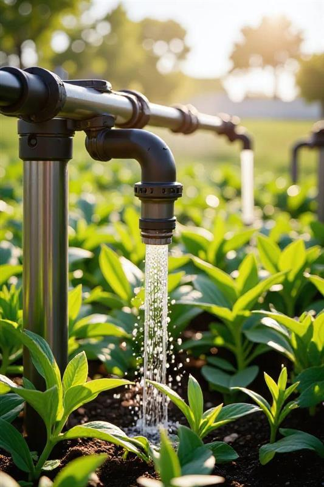
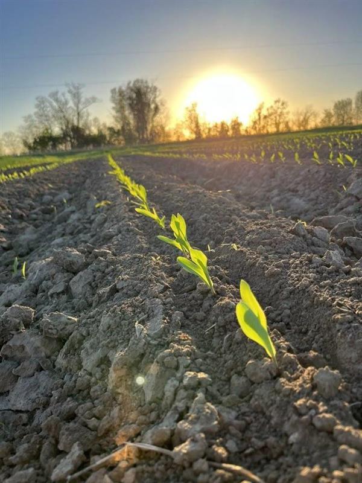
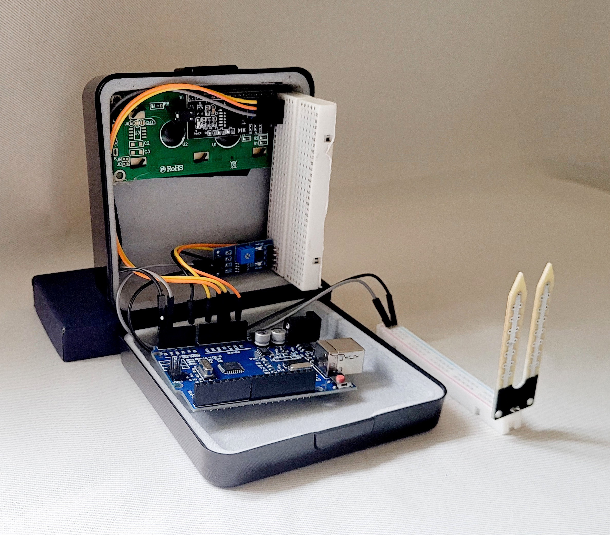

Tecnologia simples para economizar água e melhorar a produtividade agrícola!
Saiba Mais

Sobre o Projeto
Nosso projeto tem como objetivo solucionar dificuldades em plantações que utilizam o método de irrigação por aspersão. Para isso, desenvolvemos um sistema que realiza a leitura da umidade do solo, permitindo ao operador calibrar a irrigação conforme a necessidade específica de cada tipo de cultivo.
Essa solução promove:
- Maior eficiência no uso da água
- Economia de recursos
- Melhoria na qualidade dos produtos agrícolas
Infraestrutura Necessária:
- Arduino UNO: responsável pelo gerenciamento do sistema, executando comandos por meio de portas lógicas.
- Sensor de Umidade do Solo: coleta dados sobre a umidade presente no solo e envia essas informações ao Arduino.
- Cabos de Comando: fazem a conexão entre os componentes, garantindo a comunicação eficiente entre eles.

Contribuição para os Objetivos de Desenvolvimento Sustentável (ODS)
- Nosso projeto está alinhado com o ODS 9 - Indústria, Inovação e Infraestrutura, pois:
- Desenvolve uma infraestrutura tecnológica de qualidade para o setor agrícola.
- Promove uma industrialização sustentável, ao otimizar o uso da água.
- Moderniza o processo de irrigação, tornando-o mais eficiente e ecológico.
